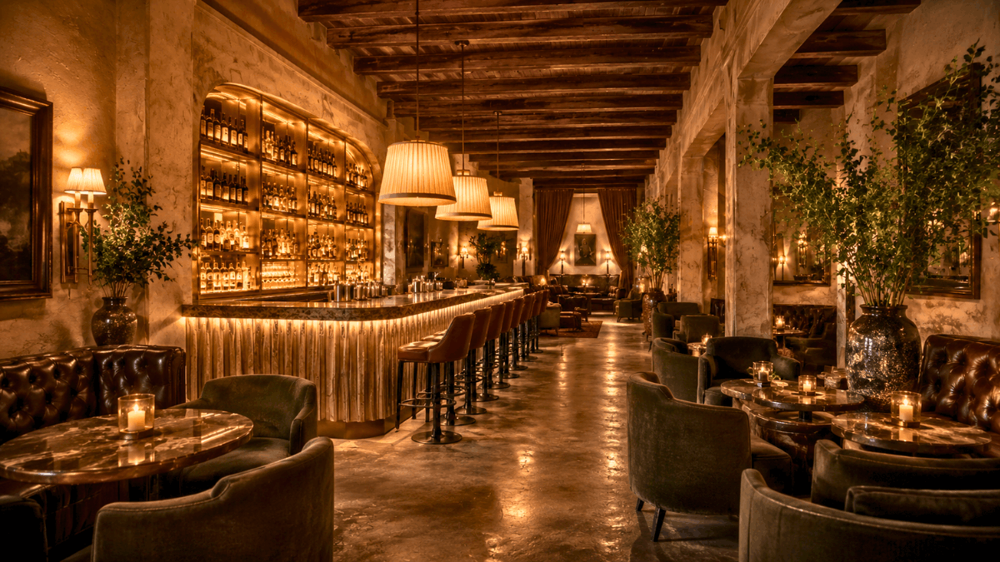
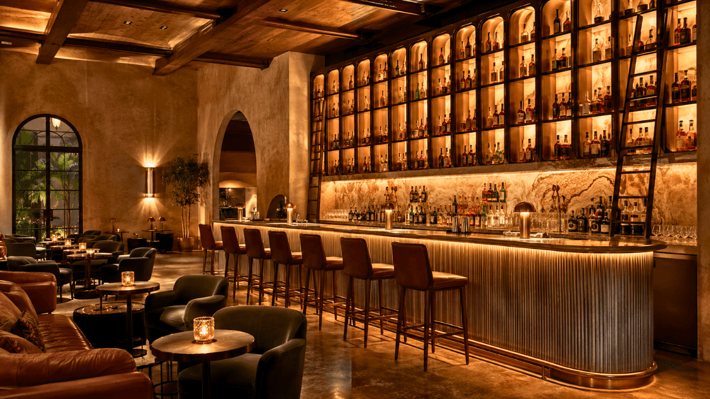
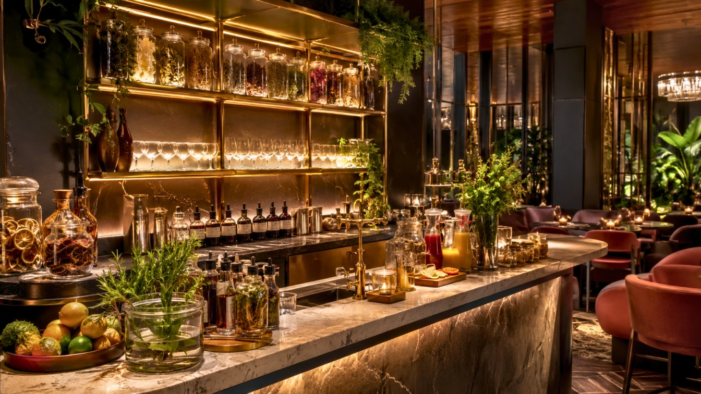
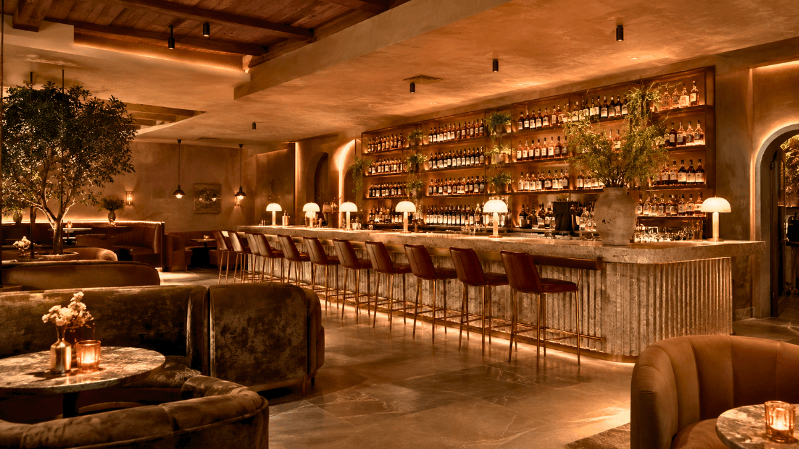

The bar and cocktail lounge industry has always been one of the most design-forward sectors in hospitality. But 2026 is shaping up to be a particularly transformative year. After half a decade of rapid cultural shifts changing drinking habits, the rise of zero-proof culture, evolving social rituals, and a guest demographic that expects both aesthetic excellence and experiential depth, bar design has entered a new era of sophistication.
At SprintCo, we work with bar owners, restaurateurs, and hospitality groups across the country to translate these trends into spaces that feel current, distinct, and commercially successful. In this guide, we break down the most significant bar and cocktail lounge design trends defining 2026 and what they mean if you’re planning, renovating, or reimagining a bar concept.

1. The Return of the Grand Bar as Focal Point
For a few years, the prevailing design wisdom was to distribute the bar throughout the space, smaller satellite bars, service stations scattered across a venue, and the bartender was made secondary to the overall room. In 2026, we are witnessing a strong reversal of that approach.
The grand bar is back. Long, dramatic counters often stretching the full width of a room are once again commanding the centre of attention. These aren’t just functional surfaces; they are architectural statements. We’re seeing bars clad in fluted marble, brushed brass, hand-laid zellige tiles, and even backlit onyx that glows from within. The back bar is being treated as a display wall, with bottles arranged as art objects and bespoke shelving that reaches floor-to-ceiling.
This shift reflects something deeper than aesthetics. Guests in 2026 want to watch the craft happen. They want to see the bartender at work, the theatre of a well-made drink, the ritual of ice being chiselled, the precision of a pour. The grand bar makes that spectacle central to the dining and drinking experience.
For SprintCo projects, this has meant investing significantly more of the design budget in the bar structure itself, treating it not as a piece of furniture but as the room’s defining architectural element.

2. Textured, Tactile Surfaces Everywhere
Flat, smooth surfaces are fading fast. The defining material language of 2026 bar design is textured surfaces you want to touch, that catch light differently at different angles, that make a room feel layered and handcrafted rather than assembled.
This shows up across every surface category:
Walls are being finished in limewash paint, raw plaster, raked concrete, and hand-applied clay renders. These techniques create surfaces that are never perfectly uniform, giving each venue a one-of-a-kind quality that cannot be replicated.
Ceilings have become a genuine design canvas. Coffered timber, pressed tin, woven rattan panels, stretched linen, and even living moss installations are appearing overhead in cocktail lounges that want to create an immersive environment from floor to ceiling.
Bar tops and counters are moving away from polished stone toward materials with more visual weight, such as leather-wrapped edges, soapstone, leathered granite, hammered copper, and poured resin with embedded botanicals.
Seating upholstery favours tactile fabrics: boucle, velvet, chenille, and woven textiles in earthy, saturated tones.
The guest experience in a well-designed bar engages all the senses. Texture is how design speaks to touch, and the best bars in 2026 understand this intuitively.
3. Warm, Low, Layered Lighting
Lighting is perhaps the single most impactful design decision in a bar, and 2026 is firmly the year of warm, layered, low-intensity illumination.
Overhead lighting is being minimized or eliminated in cocktail lounges. Instead, designers are creating lighting ecosystems built from multiple sources at varying heights: table lamps, candlelight, wall sconces, undershelf glow, backlit shelving, and pendant clusters that hang low over the bar counter.
The colour temperature trend is decisively warm, 2200K to 2700K, producing the amber glow associated with intimacy and comfort. Cool-toned LED lighting, so common in bar fit-outs of the early 2020s, now reads as clinical and unwelcoming in contrast.
Candlelight, both real and high-quality faux, is making a significant comeback in upscale cocktail lounges. The flicker of a flame is, neurologically speaking, one of the most effective ways to make a space feel intimate and alive.
Neon and backlit signage, popular in the maximalist bars of recent years, is still present in 2026 but increasingly used with more restraint. A single neon element used strategically in an otherwise warm, dim environment hits harder than an entire wall of glowing signs competing for attention.
SprintCo’s lighting design process always begins with a key question: how do we want guests to feel at different times of the evening? Lighting that works brilliantly at 10 pm may feel oppressive at 6 pm. Dimmer systems and scene-setting technology allow bars to evolve their lighting atmosphere across a service.

4. The Sober-Curious Design Response
One of the most significant cultural shifts reshaping bar design in 2026 is the sober-curious movement. A growing segment of guests, particularly younger demographics, are choosing to drink less or not at all, without any desire to be excluded from the social rituals of bar culture.
Thoughtful bar design is responding to this in meaningful ways.
Dedicated zero-proof stations are appearing in upscale cocktail lounges, distinct service areas or menus that treat non-alcoholic drinks with the same craft, theatricality, and visual spectacle as their alcoholic counterparts. The design of these stations communicates to non-drinking guests that they are equally valued.
Seating design is evolving to ensure that guests who aren’t drinking still feel comfortable lingering. Softer seating arrangements with lower tables, generous spacing, and comfortable upholstery create environments where presence matters more than consumption.
Menu design and display, increasingly integrated into the physical environment through wall-mounted chalkboards, printed menus, and digital displays, are being designed to give equal prominence to non-alcoholic offerings.
This is not a niche consideration. Bars that design inclusively for sober and sober-curious guests are capturing a growing market and building deeper loyalty with guests who have long felt overlooked in traditional bar environments.
5. Biophilic Design Goes Deeper
Biophilic design, incorporating natural elements into built environments, has been a trend for several years. In 2026, it is maturing from a surface-level aesthetic into something more thoughtfully integrated.
Early biophilic bar design meant adding a few potted plants and calling it done. What we’re seeing now is much more considered. Living walls with genuine horticultural care behind them. Large-format planters with sculptural trees or dramatic tropical species. Timber elements are left raw or lightly finished to preserve their natural grain. Water features, acoustically considered, add the ambient sound of moving water to a lounge atmosphere.
The integration of natural materials extends to details: coasters made from cork or slate, bar accessories crafted from wood and stone, and menus bound in natural linen.
There is strong evidence that biophilic environments reduce stress and encourage guests to stay longer. For a cocktail lounge, where dwell time directly correlates with revenue, this is a commercial argument as much as an aesthetic one.
SprintCo has developed specific expertise in specifying living plant elements for commercial hospitality environments, a surprisingly technical challenge that requires understanding drainage, artificial lighting supplementation, maintenance access, and species selection for low-light, high-humidity conditions.
6. Destination Drinking Rooms: The Club-Within-a-Bar
One of the most interesting spatial trends in cocktail lounge design in 2026 is the proliferation of distinct zones within a single venue. Rather than one homogeneous bar environment, forward-thinking operators are creating multiple micro-environments within the same space, each with its own character, lighting, seating typology, and atmosphere.
This might look like a main bar with high stools and an energetic, social atmosphere, sitting alongside a lounge corner with deep sofas and low lighting for a quieter, more intimate mood. A private alcove or curtained booth section caters to small groups wanting seclusion, while a compact standing cocktail bar near the entrance handles quick drinks and first-impression interactions.
This zoning approach serves guests at different stages of their evening and for different social purposes. It also gives operators the flexibility to programme different parts of the space differently, a DJ in one zone, a quiet playlist in another.
From a design perspective, this trend requires careful acoustic design. Poor acoustic separation between zones defeats the purpose entirely. Suspended baffles, upholstered surfaces, strategic layout planning, and sometimes discreet partial walls or screens are all tools SprintCo uses to achieve meaningful acoustic differentiation between zones in an open-plan bar.
7. Heritage, Patina, and the Beauty of Age
In sharp contrast to the ultra-polished, mirrored, highly finished bar interiors that dominated the previous decade, 2026 is embracing imperfection and the visual language of age and history.
Worn leather seating with visible patina. Antique mirrors that fog and spot at the edges. Reclaimed timber with a history in every knot and crack. Exposed brick that has been painted over and stripped back. Vintage barware displayed on open shelving. Hand-painted signage with deliberate imprecision.
This aesthetic communicates something very specific to guests: this place has stories. It didn’t appear overnight from a showroom catalogue. It has a character that cannot be manufactured even when, of course, it technically can be.
The skill in executing this trend lies in balance. Spaces that lean too hard into faux-vintage feel theatrical and dishonest. The best examples in 2026 mix genuine antique pieces and reclaimed materials with more contemporary elements, creating environments that feel curated rather than costumed.
For new bar builds, SprintCo recommends sourcing authentic antique pieces, bar fixtures, pendant lights, door hardware, and upholstered chairs that anchor the space in genuine material history, then designing around them rather than dressing a completed space after the fact.
8. The Speakeasy Influence: Concealment and Discovery
There is a perennial romance to the speakeasy concept, the hidden door, the unmarked entrance, the sense that you are somewhere not everyone knows about. In 2026, this influence is more prevalent than ever in cocktail lounge design, though often applied with greater subtlety than the literal “hidden bar behind a bookcase” trope.
The design principles at play are about creating a sense of discovery and exclusivity through spatial experience. Entrances that require navigation through a corridor, down a flight of stairs, or past a curtained vestibule. Reception points that feel like gatekeeping without being unwelcoming. Spaces that are slightly harder to see into from outside, creating an interior world that reveals itself gradually to arriving guests.
Sound design is a significant component of this trend. Arriving at a well-designed cocktail lounge in 2026, the guest might first hear the low murmur of conversation and a carefully curated music selection before they see the space at all. This builds anticipation and creates the experiential separation between the street outside and the world within.
SprintCo considers entry sequence to be one of the most undervalued design moments in a bar fit-out. A guest’s first thirty seconds inside a venue, the transition from arrival to being seated sets the emotional register for everything that follows.
9. Sustainability as a Design Value, Not a Marketing Strategy
The hospitality industry is under increasing pressure from regulators, from guests, and from its own conscience to operate more sustainably. In 2026, sustainability in bar design has matured from a box-ticking exercise into a genuine design value that influences material selection, construction methodology, and operational systems.
Material sourcing is increasingly local and verified reclaimed timber from demolished local structures, stone from regional quarries, and upholstery fabrics with certified sustainable origins. The carbon footprint of materials shipped across the world is becoming a real factor in specification decisions.
Energy systems in new bar builds are prioritizing LED lighting with smart dimming, induction bar equipment, efficient refrigeration, and heat recovery ventilation. These are not just environmental choices; they directly reduce operating costs over the life of the fit-out.
Perhaps the most underrated sustainability consideration is the longevity of design. A bar interior that will look dated in three years is fundamentally wasteful. SprintCo designs for longevity, choosing materials, palettes, and design languages that have depth and will age gracefully rather than chasing micro-trends that burn out quickly.

What This Means for Your Bar Project in 2026
Whether you are opening a new cocktail lounge from scratch, refreshing an existing bar concept, or repositioning a venue to capture a different market, these trends offer a clear picture of where guest expectations and design culture are heading.
The throughline across all of them is depth. Guests in 2026 are drawn to spaces that reward attention, where the closer you look, the more you find. Where the materials have been chosen with care, the lighting has been considered at every hour of the evening, and the spatial experience has been designed from the moment of arrival to the last moment before departure.
At SprintCo, this is exactly how we approach every bar design project. We begin not with a mood board but with a conversation about experience, what we want guests to feel, remember, and tell their friends about. Everything that follows, from the choice of bar top material to the acoustic treatment of the ceiling, flows from that conversation.
If you’re planning a bar or cocktail lounge project in 2026, we’d love to be part of it from the very beginning.
Get in touch with the SprintCo design team. Let’s build something worth talking about.
SprintCo Restaurant & Hospitality Design | Designing spaces that guests return to.
Pan-India presence | 3500+ F&B spaces delivered — Visit SprintCo’s Website